나만의 · 안전한 · 조용한 일기장
조용히,
있는 그대로 적어요
가입도, 광고도, 지켜보는 사람도 없어요.
단단히 잠기고, 잃어버리지 않고, 언제든 가져갈 수 있어요. 일기는 내 기기와 내 iCloud에만 저장돼요.
무료 다운로드 · iPhone, iPad, Mac · iOS 17, macOS 14 이상
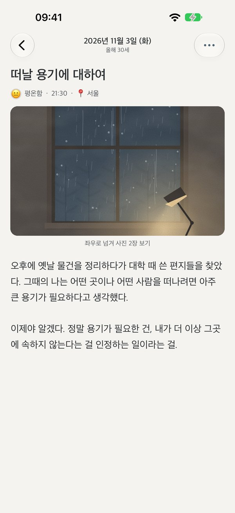
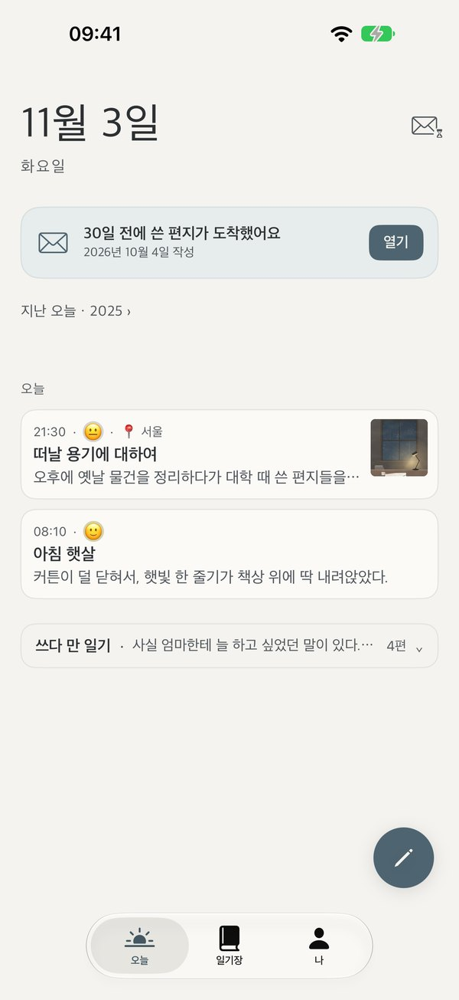
조용히 쓰기
열면 바로 쓸 수 있어요
오늘 날짜와 짧은 질문 하나, 그 아래는 빈 종이예요. 기분, 사진, 지금 있는 도시를 더해도 좋고, 몇 줄만 적어도 괜찮아요. 쓰다 멈춰도 사라지지 않으니, 쓰고 싶을 때 다시 돌아오세요.
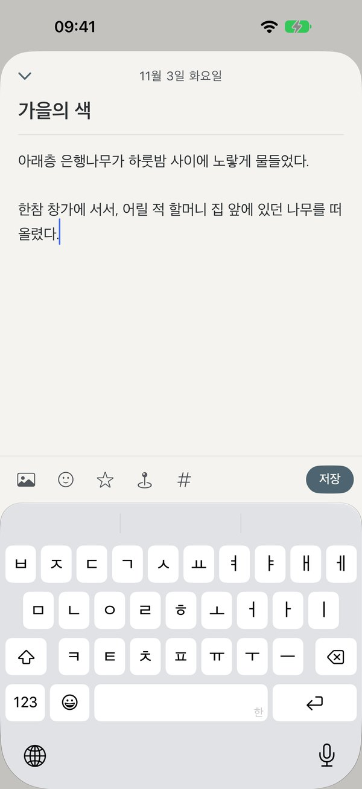
간직하기
한 해, 한 권의 책
해마다 쓴 일기가 한 권의 책으로 묶여요. 이름을 붙이고, 표지를 고르고, 마음에 드는 속지를 골라 보세요. 몇 년이 지나면 책장에는 내가 지나온 날들이 꽂혀 있을 거예요.
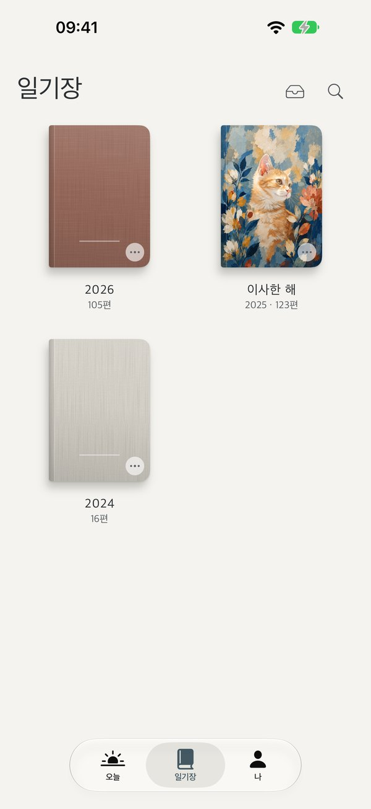
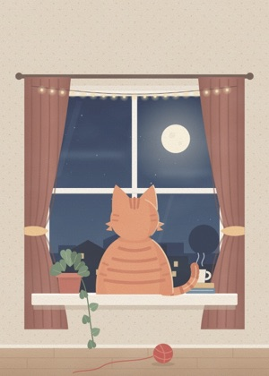
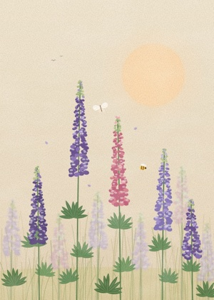
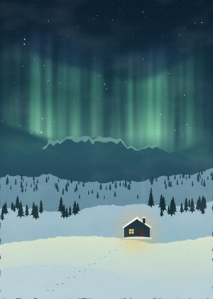
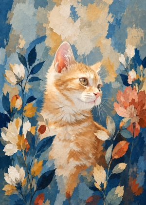
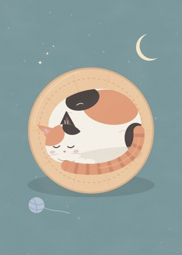
해마다 마음에 드는 표지를 골라요
돌아보기
어느 날로든 돌아가기
타임라인을 따라 한 편씩 읽거나, 한 해 캘린더에서 날짜를 눌러 보세요. 찾는 글이 있다면 검색으로 바로 찾을 수 있어요.
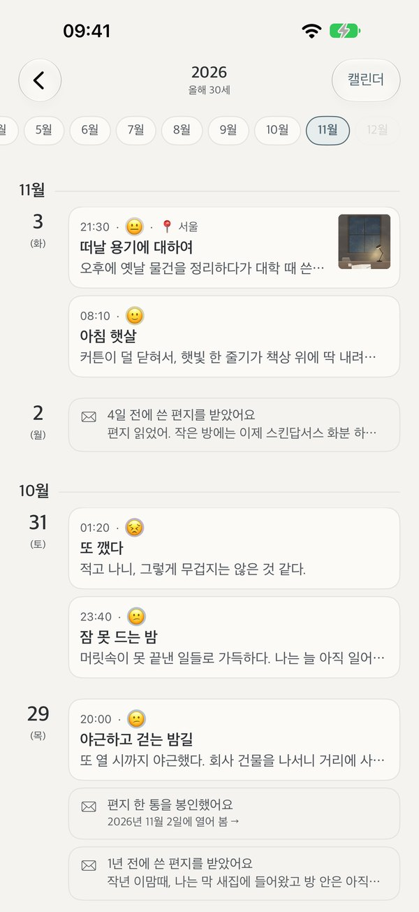
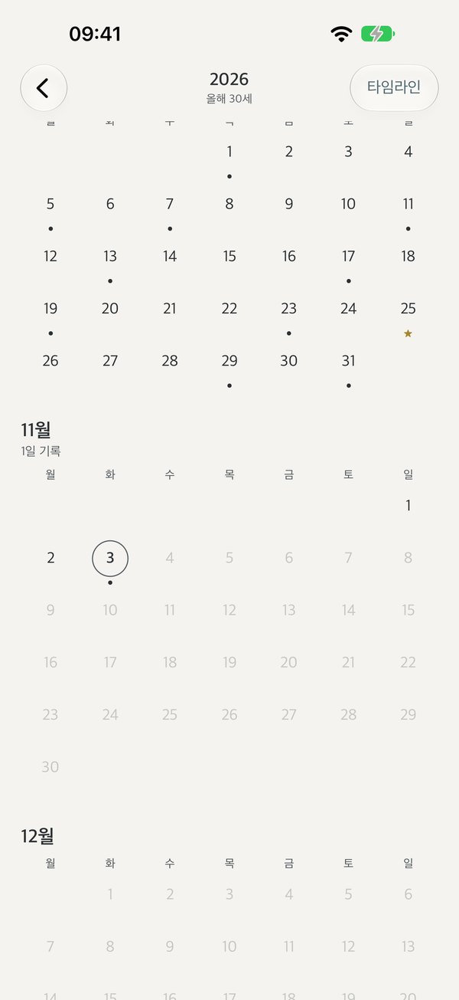
타임캡슐
미래의 나에게, 소중한 사람에게
미래의 나에게 편지를 쓰고 열어 볼 날을 골라요. 그날까지 편지는 봉인되어 아무도 읽을 수 없어요. 그날이 오면 Lundi가 살며시 알려 드려요. 읽은 뒤에는 답장을 써서 더 먼 미래로 보낼 수 있어요.
연인, 가족, 친구에게 쓸 수도 있어요. 편지는 먼저 내 편지함에 넣어 두고, 고른 날이 되면 알려 드려서 PDF, 이미지, 봉투로 보낼 수 있어요.
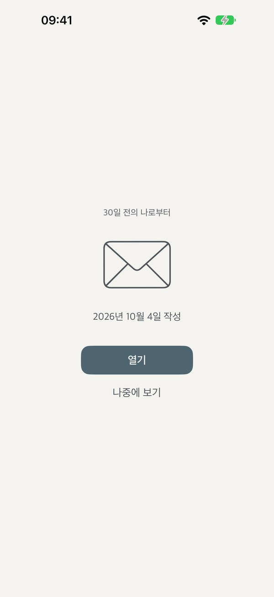
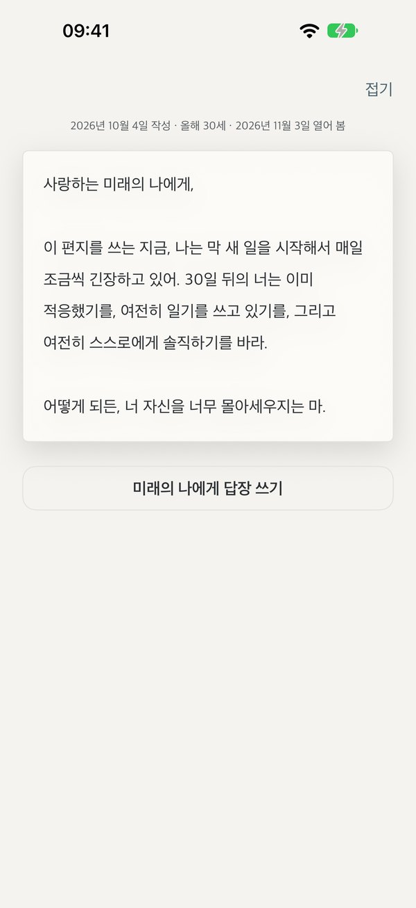
안전하게, 나만 보게
나만 볼 수 있게
iPhone 암호와 따로, Lundi만의 암호를 정할 수 있어요. iPhone 암호를 아는 사람도 바로 열 수 없어요.
누군가 ‘암호를 잊으셨나요?’로 재설정하면 기록이 남아, 다음에 열 때 알 수 있어요.
앱 잠금, 일기장 잠금, 편지함 잠금. Face ID, Touch ID, 암호로 열어요.
Lundi가 백그라운드로 가면 화면을 가려서, 앱 전환 화면에 일기가 보이지 않아요.
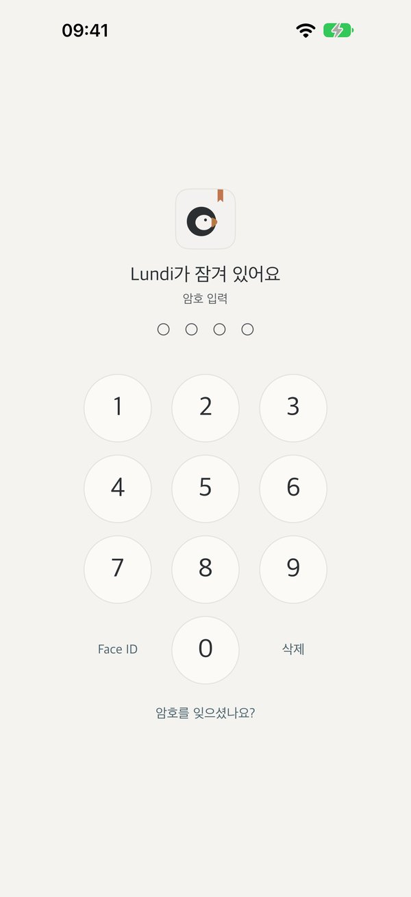
사라지지 않게
쓴 글은 사라지지 않아요
손을 멈추면 1초 만에 저장돼요. 쓰다 만 일기도, 중간에 끊긴 일기도 남겨 둬요.
‘저장할까요?’라고 묻지 않아요. 저장한 일기를 고칠 때도 저장하기 전까지 원래 글이 그대로 남아요.
삭제한 일기는 ‘최근 삭제된 항목’에 30일 동안 남아요.
iCloud 동기화를 켜 두면 기기를 바꾸거나 다시 설치해도 내 iCloud에서 일기가 돌아와요.
언제까지나 내 것
일기는 언제까지나 내 것
널리 쓰이는 공개 형식(.zip). 새 기기에서도, 다른 앱에서도 모두 복원할 수 있어요.
일기를 한 편씩 텍스트 파일로 내보내 어디서든 열 수 있어요.
책처럼 조판해 인쇄하고 제본할 수 있어요.
잃어버리거나 로그인이 안 될 계정이 없어요. 옮겨 오기도 쉬워요: Markdown, 일반 텍스트, 많이 쓰는 일기 앱의 내보내기 파일을 지원해요.
우리의 약속
- 우리도 일기를 볼 수 없어요계정도 서버도 없어요
- 광고 없음, 추적 없음데이터를 팔지 않고, 앱에서 하는 일도 기록하지 않아요
- 무료 기능은 계속 무료나중에 유료로 바뀌지 않아요
- 평생 이용권은 평생새 요금제가 나와도 줄어들지 않아요
- 언제든 보고, 가져갈 수 있어요Pro가 아니어도 마찬가지예요
- 재촉도, 연속 기록도 없어요오랜만에 돌아와도 그대로 있어요